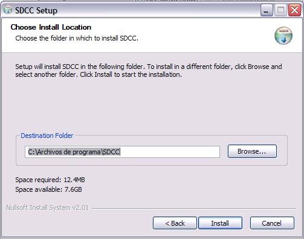
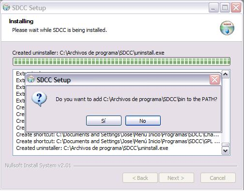

Pinchamos en la botón “I Agree” . Y esta es la ventana siguiente:

Volvemos a Pulsar “Next” tras verificar el nombre que queremos ponerle al grupo de carpetas para el compilador.

Ahora decidimosque tipo de instalación queremos hacer. Si queremos cambiar la que figura por defecto, pulsaremos en el botón desplegable donde elegiremos entre las opciones Full, Medium y Compact o Custom, nosotros elegiremos la que viene por defecto “Full” y así seleccionaremos todas las librerias que trae el compiador.Tras pulsar “Next”, tenemos:

Ahora podemos elegir la ruta de instalación. Nosotros hemos dejado la que viene por defecto, y pulsamos ”Install”.

